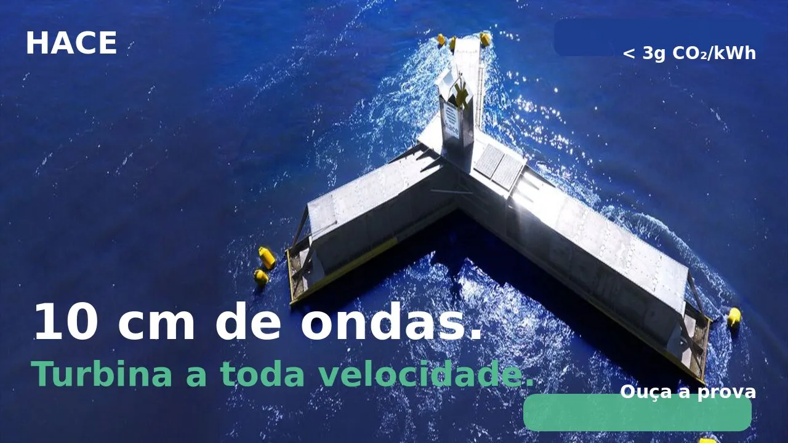

Dr. Jean-Luc Stanek
Presidente executivo / CEO
Cavaleiro do Mérito Marítimo
Transformamos ondas em eletricidade. Limpa, competitiva, disponível 24h/24.
Três rupturas fundamentais que mudam a equação económica da energia das ondas.
Os conversores de ondas atuais adaptam-se mal a diferentes gamas de condições de ondulação. Dimensionados para uma gama estreita, produzem pouco com mar calmo e entram em proteção com mar agitado. Resultado: fator de capacidade baixo e custo de energia que nunca baixa.
Cada sistema é projetado sob medida para o seu local para maximizar o fator de capacidade — a chave do sucesso económico. O baixo custo da eletricidade é a consequência direta desta abordagem.
A intermitência é o calcanhar de Aquiles de todas as energias renováveis: solar, eólica e os conversores de ondas atuais param ou entram em modo de proteção assim que as condições ultrapassam a sua gama de funcionamento. Cada hora parada reduz o fator de capacidade e torna o modelo económico insustentável.
A HACE produz nas piores condições — ciclones, ondas gigantes, tsunamis. Quanto mais agitado o mar, maior a produção. O sistema é insubmersível e projetado para durar mais de 50 anos.
A complexidade de alguns conversores impede a implantação em massa. Requerem equipamentos pesados e caros — gruas de grande capacidade, navios especializados, componentes sob medida.
A HACE pode ser fabricada em qualquer estaleiro, sem equipamento pesado. Colunas de água oscilantes em aço standard, abordagem industrial de produção em massa. Mais de 95% reciclável.
Ondas de 10 cm. Turbina a toda velocidade.



A energia das ondas aborda mercados concretos, solventes e em crescimento, em todos os litorais do mundo.
Potencial teórico estimado pela AIE. O consumo mundial de eletricidade é de cerca de 25.000 TWh/ano. A energia das ondas sozinha poderia suprir essa procura.
Ilhas, zonas costeiras, países em desenvolvimento: procura estrutural de energia descarbonizada e água doce por dessalinização.
Regulamentações da OMI e UE em curso. A HACE fornece energia "Absolute Zero" para portos, abastecimento H₂ e alimentação em cais.
Territórios insulares (custo diesel 300-500€/MWh), fachadas atlânticas europeias, costas africanas, Caraíbas e Pacífico Sul.
HACE e o seu parceiro SHZ reúnem os dois elos em falta para tornar o hidrogénio verde competitivo em escala: energia não intermitente e ultra descarbonizada, e um armazenamento revolucionário.
Energia estável, não intermitente e ultra descarbonizada (a partir de 15€/MWh, < 3g eqCO₂/kWh) para alimentar eletrolisadores em contínuo.
O eletrolisador é operado pelo cliente industrial ou por um parceiro certificado. A HACE fornece a energia ideal para o fazer funcionar a plena capacidade, em contínuo, ao menor custo possível.
Reservatórios H₂ 20× mais leves que os existentes: 1 t de reservatório por 1 t de H₂ transportado. Parceiro escolhido pela NASA para o avião do futuro a hidrogênio.
Soluções auxiliares para a utilização do H₂ verde. Descarbonização dos transportes terrestres, marítimos e aéreos.
Aliança mundial de 50+ atores. A HACE fornece energia "Absolute Zero" para navios e portos.
Elimina os principais fatores responsáveis pela erosão costeira por desfasamento das órbitas das moléculas de água.
Promove o reabastecimento natural de sedimentos nas praias, sem intervenção artificial.
Nenhum fluido poluente, zero betão, ancoragens biodinâmicas. Impacto positivo na biodiversidade.
Energia + proteção costeira reduz o custo por utilização. Diques flutuantes, marinas, instalações costeiras.
"A tecnologia HACE integra-se perfeitamente na nossa estratégia de transição energética portuária. A sua aceitação social e respeito pela biodiversidade são trunfos importantes."
« Foi produzida eletricidade graças à tecnologia houlomotriz HACE, mesmo com ondulação muito fraca. O ensaio parece promissor para esta primeira fase. »
"A HACE vai mais longe ao fornecer água doce e prevenir a erosão costeira. A ZESTAs tem o prazer de se associar a visionários que abordam os desafios de mitigação e adaptação às alterações climáticas numa única tecnologia."
« Como profissionais do mar, vemos na HACE uma solução compatível com as nossas atividades. A proteção costeira é um bónus considerável. »
"Eletricidade e hidrogénio a partir das ondas. Uma tecnologia francesa em processo de industrialização."
A HACE utiliza o princípio das Colunas de Água Oscilantes Múltiplas. As ondas entram em câmaras abertas debaixo de água, comprimem o ar através de válvulas unidirecionais, criando um fluxo de ar contínuo que aciona uma turbina. O sistema funciona como um motor a pistão alimentado pelas ondas, otimizado em todo o espetro de ondulação.
Sim. A HACE capta energia de todas as ondas, mesmo caóticas, de 5 cm a mais de 30 m. Insubmersível, resistente a ciclones, ondas gigantes e tsunamis. Vida útil validada superior a 50 anos por cálculos e simulações numéricas.
Menos de 3g eqCO₂/kWh em ciclo de vida. Comparação: solar ~40g, eólica ~11g, nuclear ~6g. A HACE atinge este resultado graças à construção 95% reciclável em aço, sem betão.
LCOE a partir de 15€/MWh para grandes parques bem localizados (Mar do Norte, Iroise). Tal como para solar ou eólica, o preço final depende do tamanho, local e ligação à rede. O elevado fator de capacidade (50 a 90% conforme local) e o design específico para cada local são as chaves desta competitividade.
Produção estável não intermitente ideal para eletrolisadores em contínuo. Resultado: possibilita H₂ verde a menos de 2€/kg. Em parceria com SHZ (armazenamento 20x mais leve) e H2X (ecossistemas de uso).
Impacto mínimo: zero betão, nenhum fluido poluente, menos de 5 m acima da água, ancoragens biodinâmicas. Bónus: proteção costeira ativa contra erosão e reabastecimento natural das praias.
Engenheiros, especialistas offshore, financeiros e industriais — uma equipa multidisciplinar ao serviço da transição energética marinha.
Presidente executivo / CEO
Cavaleiro do Mérito Marítimo

Diretor I&D
Ex-Airbus · Especialista em aerodinâmica

Especialista I&D

Especialista operações offshore

Especialista financeiro e investidor

Especialista jurídico

Especialista industrial

Diretor comercial

Dir. informática e cibersegurança
Investidores, parceiros industriais, autarquias: juntem-se ao projeto HACE.
Presidente executivo / CEO — Cavaleiro do Mérito Marítimo